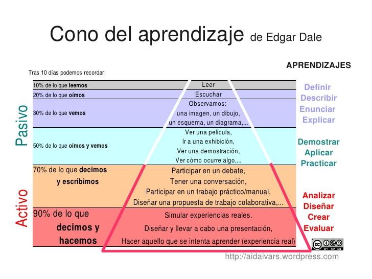

¿Por qué ACbR?
El alumno activo aprende mejor que el alumno pasivo. Si enfrentamos al alumno a un reto, a trabajar activamente y a buscar su solución, las competencias y capacidades son asimiladas mejor y más permanentemente.
La clase magistral frente al enfrentamiento de un reto :

Es lo que se llama Cono de aprendizaje de Edgar Dale

Hay tres poderosas razones que es necesario cambiar algo en nuestras aulas:
- La normativa: Desde la UE se insiste que el alumnado tiene que adquirir unas competencias clave para su desarrollo profesional, que aunque cada ciclo formativo tiene las específicas, hay objetivos generales de la FP donde el ACbR encaja perfectamente. Ver ORDEN de 29 de mayo de 2008, de la Consejera de Educación, Cultura y Deporte, por la que se establece la estructura básica de los currículos de los ciclos formativos de formación profesional y su aplicación en la Comunidad Autónoma de Aragón BOA 4-6-08
- Demanda del mundo empresarial Las empresas valoran el trabajo en equipo, la comunicación eficaz y la capacidad de resolución de conflictos.
- Situación actual en el aula El alumnado sólo estudia para el examen, pierde la concentración(WhatsApp, tiktok), deficiencias en su comunicación eficaz (¡Eh bro !!), no aprecian la calidad del trabajo (Este módulo me lo dejo), falta de iniciativa (Pero ¿esto hay que copiarlo?).... hay pues una necesidad de cambio.
¿Qué vamos a conseguir?
- Mayor implicación y motivación
- Mejores resultados
- Mayor autonomía
- Adquisición de las competencias básicas
- Mayor colaboración del equipo docente por la intermodularidad del ACbR
- Una evalución más real.
- Posibilidad de incluir otras metodologías: Flipped Classroom, Gamificación...